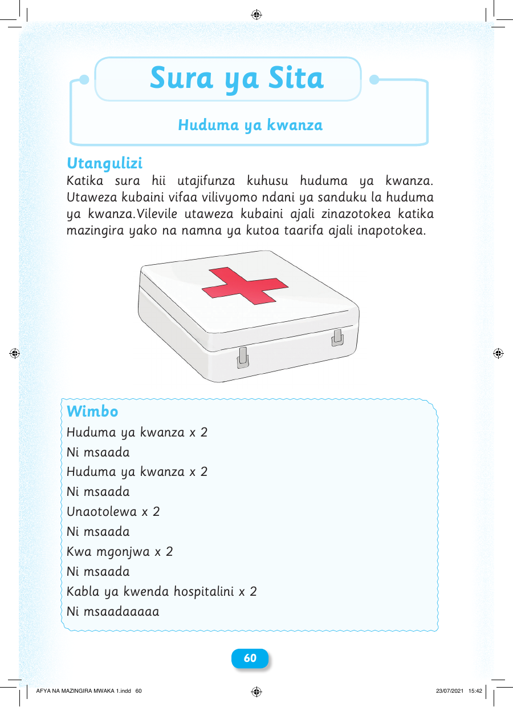

Sura ya Sita Huduma ya kwanza Utangulizi Katika sura hii utajifunza kuhusu huduma ya kwanza. Utaweza kubaini vifaa vilivyomo ndani ya sanduku la huduma ya kwanza.Vilevile utaweza kubaini ajali zinazotokea katika mazingira yako na namna ya kutoa taarifa ajali inapotokea. Wimbo Huduma ya kwanza x 2 Ni msaada Huduma ya kwanza x 2 Ni msaada Unaotolewa x 2 Ni msaada Kwa mgonjwa x 2 Ni msaada Kabla ya kwenda hospitalini x 2 Ni msaadaaaaa 60 AFYA NA MAZINGIRA MWAKA 1.indd 60 23/07/2021 15:42